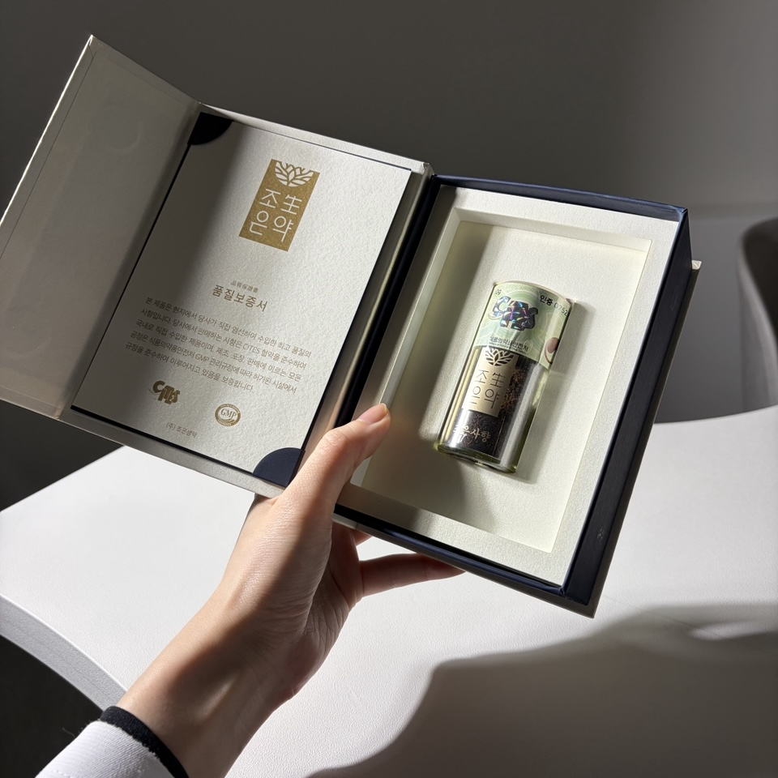
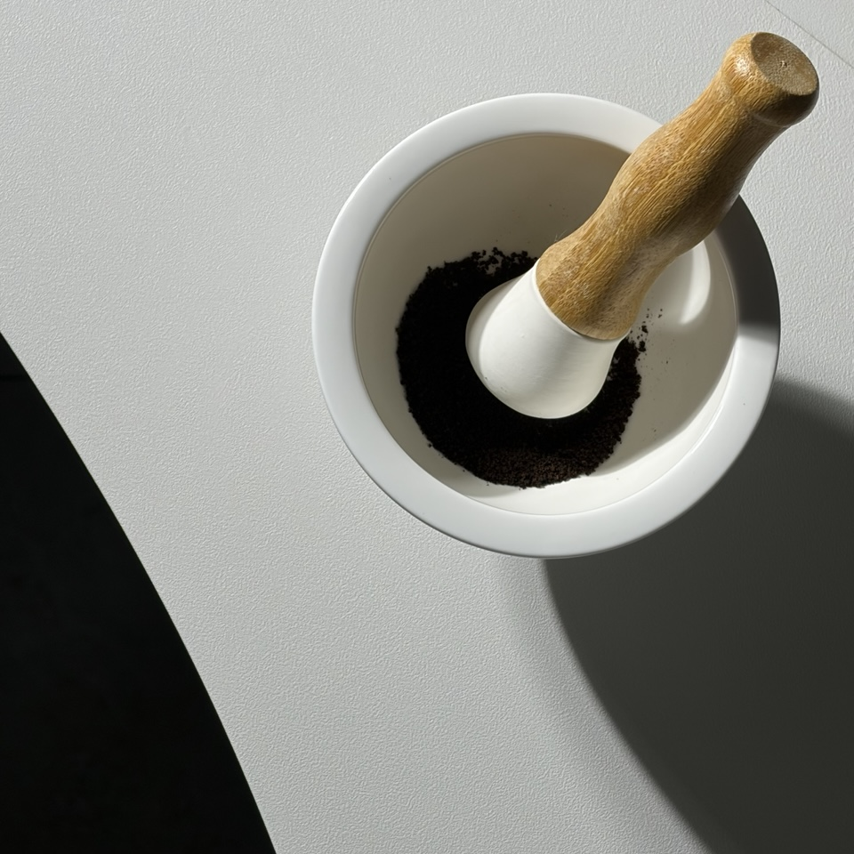
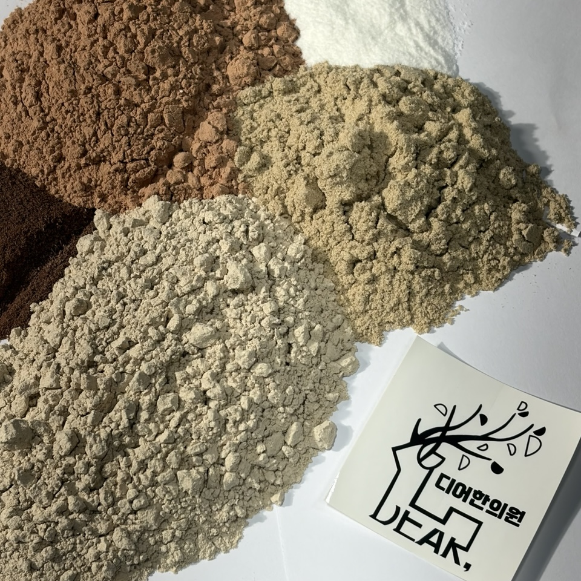

같은 이름의 공진단이라도 처방의 구성과 약재, 조제 과정은 모두 같지 않을 수 있습니다. 디어한의원이 공진단을 처방하기 전에 진료와 상담을 중요하게 생각하는 이유도 여기에 있습니다.
공진단이란 무엇인가요?
공진단(拱辰丹)은 녹용, 당귀, 산수유, 사향을 중심으로 구성되는 전통 한약 처방입니다. 원대 의서인 『세의득효방(世醫得效方)』에 수록된 뒤 『동의보감』 등 후대 의서에도 전해졌으며, 한의학에서는 선천적으로 허약하거나 오랜 소모로 몸의 기운이 저하된 상태를 살펴 활용해 왔습니다.
공진단이라는 이름은 북극성을 중심으로 여러 별이 질서 있게 운행하는 모습에 빗댄 표현으로 설명됩니다. 한 가지 약재의 작용을 강조하기보다 서로 다른 성질의 약재를 하나의 처방 안에 배합한다는 복합처방의 관점을 담고 있습니다.
전통 원방에서 사향은 공진단을 이루는 핵심 약재입니다. 목향과 침향은 사향과 기원 및 성질이 다른 별도의 약재로, 사향이 빠진 자리에 이를 사용한 처방은 전통 원방 공진단과 구성이 다릅니다. 시중에서는 편의상 ‘목향공진단’이나 ‘침향공진단’이라는 이름을 사용하기도 하지만, 디어한의원은 이를 사향이 들어간 공진단과 같은 처방으로 보지 않습니다.
디어한의원은 처방의 이름과 실제 구성을 분명하게 안내합니다. 디어한의원에서 ‘공진단’이라는 이름으로 상담·처방·조제하는 공진단에는 모두 사향이 들어갑니다. 사향 대신 목향이나 침향을 사용한 조성을 공진단이라는 이름으로 혼용하지 않는 것이 본원의 원칙입니다.
오늘날에는 전통 문헌의 설명만으로 처방하지 않습니다. 피로의 양상과 지속 기간, 수면·식사·소화 상태, 기존 질환과 복용 중인 약을 확인한 뒤 공진단 처방이 적절한지 판단해야 합니다.
공진단의 처방 구성은 어떻게 이해할까요?
전통적인 공진단은 다음 네 가지 약재를 중심으로 구성됩니다. 건강보험심사평가원 연구보고서에 정리된 한약제제 기준처방 자료에서도 공진단의 주요 구성을 녹용·당귀·산수유·사향으로 제시합니다. 다만 아래 설명은 전통 한의학에서 각 약재를 이해해 온 방식이며, 개별 약재의 설명을 특정 질환에 대한 현대적 치료 효과로 곧바로 해석해서는 안 됩니다.
전통적으로 정혈(精血)을 보하고 허약한 상태를 돕는 약재로 설명됩니다. 공진단의 바탕을 이루는 주요 구성 약재입니다.
전통적으로 혈(血)을 보하고 순환을 돕는 방향으로 활용돼 온 약재입니다.
한의학적으로 간신(肝腎)을 보하고 정기가 지나치게 소모되지 않도록 돕는 약재로 설명됩니다.
처방 안에서 여러 약재의 작용이 원활하게 이어지도록 배합되는 방향성 약재로 이해됩니다. 국제거래와 수입 절차를 확인해야 하는 원료이기도 합니다.
공진단은 여러 약재가 함께 작용하도록 설계된 복합처방입니다. 따라서 특정 성분 하나의 연구 결과만으로 전체 처방의 임상적 의미를 설명하기 어렵고, 연구에 사용된 조성·용량·대상자·복용 기간을 함께 확인해야 합니다.
디어한의원 공진단은 이렇게 조제합니다
실제 원내 조제 과정
아래 네 장은 연출 이미지가 아닌 디어한의원 원내에서 직접 촬영한 사진입니다.

CITES는 멸종위기에 처한 야생동식물의 국제거래에 관한 협약입니다. 실제 사용 시에는 정식 수입·품질 관련 서류를 함께 확인합니다.
사진에 보이는 용기와 인증 표기를 포함해 실제 조제에 사용할 원료의 상태를 확인합니다.

대표원장이 실제 조제에 사용할 사향의 상태를 원내에서 직접 확인합니다.

대표원장이 녹용을 포함한 구성 약재의 상태를 확인하고 원내에서 직접 분쇄합니다. 약재별 입도와 균질성을 살핀 뒤 처방 비율에 따라 배합하는 시스템입니다.
대표원장이 먼저 상담합니다
피로와 불편감뿐 아니라 수면, 식사, 소화, 생활 습관, 기존 질환과 복용 중인 약을 함께 확인합니다.
처방 여부를 결정합니다
상담 내용을 바탕으로 공진단이 적절한지 판단하며, 다른 검사나 진료가 먼저 필요한 경우 그 방향을 안내합니다.
원내에서 직접 조제합니다
외부 완제품을 들여오지 않고 상담을 담당한 대표원장이 약재 확인과 분쇄, 배합 및 조제를 직접 맡습니다.
필요한 만큼 소량 조제합니다
미리 대량으로 조제해 장기간 보관하지 않고, 상담 후 처방이 결정되면 필요한 만큼 소량씩 만듭니다.
수제 조제는 손으로 환을 빚는다는 의미에 그치지 않습니다. 상담과 처방, 약재 확인, 분쇄와 배합, 조제 과정이 한 사람의 판단 아래 이어진다는 의미를 담고 있습니다.
공진단은 왜 상담 후 처방받아야 하나요?
공진단 상담에서는 무엇을 확인할까요?
같은 피로를 호소하더라도 원인은 서로 다를 수 있습니다. 야근과 수면 부족이 반복되는 경우가 있는 반면 식욕이나 소화 상태가 함께 저하된 경우도 있고, 복용 중인 약이나 기존 질환을 먼저 살펴야 하는 경우도 있습니다.
디어한의원에서는 ‘피곤하다’는 증상 하나만으로 공진단 처방을 결정하지 않습니다. 피로가 시작된 시점과 지속 기간, 수면과 식사, 소화 상태, 생활 습관, 기존 질환과 복용 중인 약을 종합적으로 확인합니다.
피로가 오래 지속된다면 보약이 필요한 상태로만 판단해서는 안 됩니다. 빈혈이나 갑상선 질환, 수면장애 등 다른 원인이 있을 가능성도 있으므로 필요한 경우 적절한 검사나 진료를 먼저 안내할 수 있습니다.
- 임신 또는 수유 중인 경우
- 만성질환으로 치료받고 있는 경우
- 여러 의약품이나 건강기능식품을 복용하는 경우
- 특정 한약재나 식품에 알레르기가 있는 경우
- 원인을 알 수 없는 피로가 장기간 지속되는 경우
- 발열·체중 감소·심한 두근거림 등이 동반되는 경우
복용 후 평소와 다른 불편감이 나타난다면 임의로 계속 복용하지 말고 처방한 한의사와 상담해야 합니다.
공진단에 관한 임상연구는 어디까지 진행됐을까요?
공진단은 전통 처방이지만 최근에는 피로와 삶의 질을 중심으로 무작위배정·이중눈가림·위약대조 임상시험이 진행되고 있습니다.
건강한 성인 남성을 대상으로 이틀간의 수면 부족 상황에서 공진단 복용 전후의 피로 설문, 수면의 질과 스트레스 관련 지표를 평가했습니다. 공진단의 피로 관련 활용 가능성을 사람에게서 탐색한 초기 임상연구라는 의미가 있습니다.
PubMed에서 논문 확인공진단군에서 일부 삶의 질 지표가 개선되었음을 확인했습니다. 구체적으로는 4주 시점의 SF-36 사회적 기능(Social Functioning) 지표에서 대조군보다 유의한 개선이 보고됐습니다. 연구에서는 자가보고 피로 설문과 삶의 질 지표, 피로 관련 생체지표 및 안전성 항목을 함께 평가했습니다.
PubMed에서 논문 확인2025년 정정문 확인이러한 임상시험은 공진단 연구가 경험적 활용을 넘어 표준화된 평가로 확장되고 있음을 보여줍니다. 다만 연구 결과를 개인에게 적용할 때는 연구 대상자, 사용된 공진단의 조성, 복용 기간과 평가 지표가 실제 처방 조건과 같은지 확인해야 합니다. 현재의 연구만으로 모든 종류의 피로나 모든 사람에게 같은 결과를 보장할 수는 없습니다.
조금 더 손이 가더라도, 직접 조제하는 이유
사실 외부에서 완성된 공진단을 공급받아 사용한다면 처방 과정은 한결 간편해질 수 있습니다. 그럼에도 디어한의원이 원내 직접 조제를 고집하는 이유는 저를 믿고 처방받으시는 한 분 한 분의 신뢰에 책임 있게 보답하고 싶기 때문입니다.
상담에서 살핀 환자분의 상태와 처방 의도가 조제 과정까지 온전히 이어지도록 대표원장이 약재를 직접 확인하고, 원내에서 필요한 만큼만 소량씩 조제합니다. 미리 대량으로 만들어 두기보다 약재의 상태와 배합 과정을 세심하게 살피며, 완성된 공진단을 가능한 좋은 상태로 전해드리고자 합니다.
상담부터 처방, 약재 확인과 원내 조제까지 직접 책임지는 것. 그것이 디어한의원이 환자분의 믿음을 대하는 방식이며, 디어한의원 공진단이 특별한 이유입니다.
디어한의원 공진단 자주 묻는 질문
Q1. 디어한의원 공진단은 완제품을 들여오나요?
아닙니다. 디어한의원에서 처방하는 모든 공진단은 진료와 상담 후 대표원장이 원내에서 직접 수제로 조제합니다.
Q2. 공진단을 미리 만들어 두나요?
미리 대량으로 조제해 장기간 보관하지 않습니다. 상담 후 처방이 결정되면 필요한 만큼 소량씩 조제하는 것을 원칙으로 합니다.
Q3. 디어한의원 공진단에는 모두 사향이 들어가나요?
네. 디어한의원에서 공진단이라는 이름으로 처방하고 조제하는 모든 공진단에는 사향이 들어갑니다. 목향과 침향은 사향과 다른 약재이며, 이를 사용한 조성을 사향 공진단과 같은 이름으로 혼용하지 않습니다.
Q4. 공진단은 누구나 같은 처방을 받나요?
그렇지 않습니다. 공진단의 필요 여부와 처방 방향은 건강 상태, 불편감, 생활 습관, 기존 질환과 복용 중인 약 등을 고려해 결정합니다. 같은 이름의 공진단이라도 구성과 복용 방법이 달라질 수 있습니다.
Q5. 디어한의원 공진단에는 어떤 사향을 사용하나요?
디어한의원은 정식 수입 절차와 CITES 관련 서류, 품질 관련 표시를 확인한 사향 원료를 사용합니다. 구체적인 원료와 처방 구성은 상담 시 확인할 수 있습니다.
Q6. 피곤하면 바로 공진단을 복용해도 되나요?
피로의 원인은 수면 부족과 과로부터 빈혈, 내분비질환, 감염, 정신적 스트레스까지 다양합니다. 피로가 장기간 지속되거나 다른 증상이 동반된다면 원인을 먼저 확인하는 과정이 필요합니다.
※ 본 글은 공진단에 관한 일반적인 건강정보입니다. 개인의 진단이나 치료를 대신하지 않으며, 구체적인 처방과 복용 방법은 한의사의 진료 후 결정됩니다. 사진은 디어한의원에서 실제 사용하는 원료와 원내 조제 과정을 촬영한 것입니다.